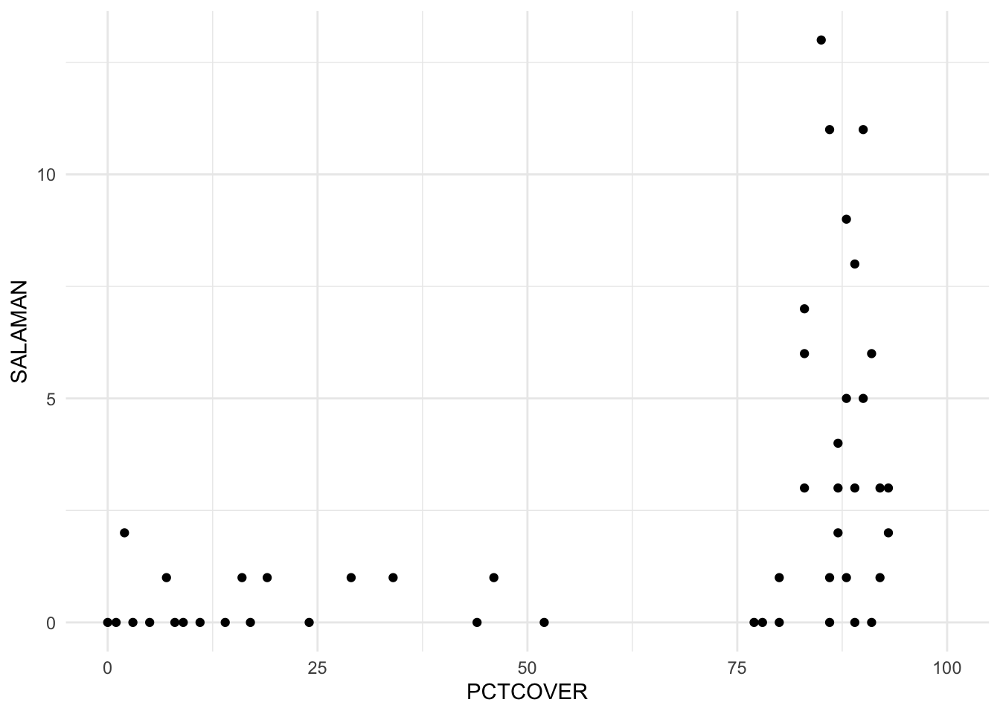
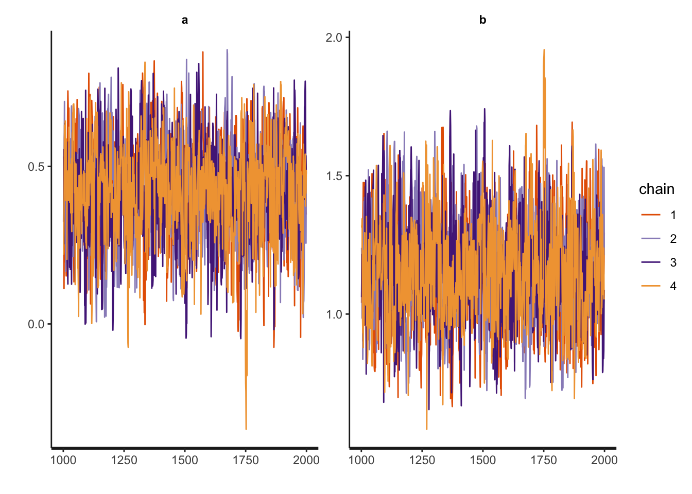
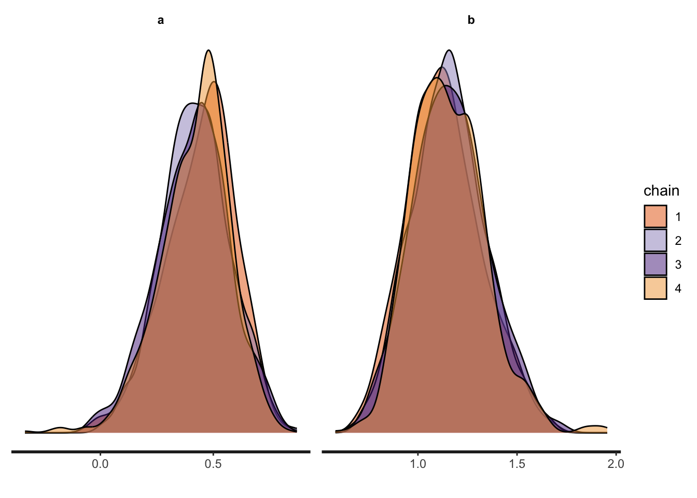
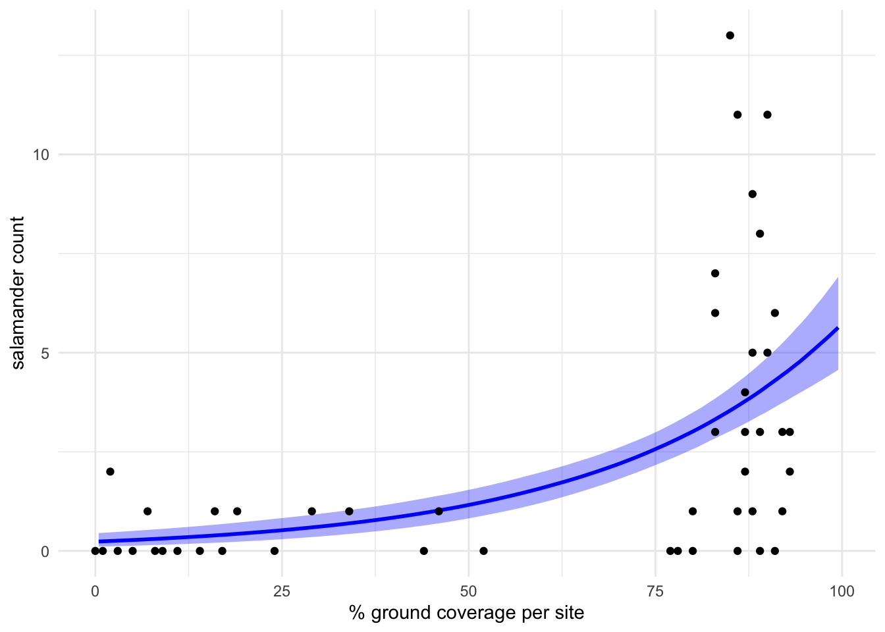

library(tidyverse)
library(tidybayes)
library(bayesplot)
library(posterior)
library(rstan)
library(brms)
options(mc.cores = parallel::detectCores(), brms.backend = "cmdstanr")
rstan_options(auto_write = TRUE)
rstan_options(threads_per_chain = 1)
theme_set(theme_minimal())Statistical rethinking 2 with rstan and the tidyverse
https://solomon.quarto.pub/sr2rstan/
data(package = "rethinking", salamanders)
d <- salamanders
rm(salamanders)
glimpse(d)Rows: 47
Columns: 4
$ SITE <int> 1, 2, 3, 4, 5, 6, 7, 8, 9, 10, 11, 12, 13, 14, 15, 16, 17, 1…
$ SALAMAN <int> 13, 11, 11, 9, 8, 7, 6, 6, 5, 5, 4, 3, 3, 3, 3, 3, 2, 2, 2, …
$ PCTCOVER <int> 85, 86, 90, 88, 89, 83, 83, 91, 88, 90, 87, 83, 87, 89, 92, …
$ FORESTAGE <int> 316, 88, 548, 64, 43, 368, 200, 71, 42, 551, 675, 217, 212, …d |>
ggplot(aes(x = PCTCOVER, y = SALAMAN)) +
geom_point() +
xlim(0, 100)
d <- d |>
mutate(count = SALAMAN,
cover_std = (PCTCOVER - mean(PCTCOVER)) / sd(PCTCOVER))
head(d) SITE SALAMAN PCTCOVER FORESTAGE count cover_std
1 1 13 85 316 13 0.7273
2 2 11 86 88 11 0.7553
3 3 11 90 548 11 0.8671
4 4 9 88 64 9 0.8112
5 5 8 89 43 8 0.8391
6 6 7 83 368 7 0.6714\[ \begin{aligned} \text{count}_i & \sim \operatorname{Poisson}(\lambda_i) \\ \log(\lambda_i) & = a + b \times \text{cover-std}_i \\ a & \sim \operatorname{Normal}(\log(1), 1) \\ b & \sim \operatorname{Normal}(0, 1), \end{aligned} \]
stan_data <- d |>
select(count, cover_std) |>
compose_data() # from `tidybayes`: convert dataframe to Stan data format (list)
str(stan_data)List of 3
$ count : int [1:47(1d)] 13 11 11 9 8 7 6 6 5 5 ...
$ cover_std: num [1:47(1d)] 0.727 0.755 0.867 0.811 0.839 ...
$ n : int 47functions {
// ... function declarations and definitions ...
}
data {
// ... declarations ...
}
transformed data {
// ... declarations ... statements ...
}
parameters {
// ... declarations ...
}
transformed parameters {
// ... declarations ... statements ...
}
model {
// ... declarations ... statements ...
}
generated quantities {
// ... declarations ... statements ...
}data {
int<lower=1> n;
vector[n] cover_std;
array[n] int<lower=0> count;
}
parameters {
real a;
real b;
}
model {
count ~ poisson(exp(a + b * cover_std)); // Likelihood
a ~ normal(log(1), 1); // Priors
b ~ normal(0, 1);
}m <- sampling(salamanders, stan_data)check_hmc_diagnostics(m)
Divergences:0 of 4000 iterations ended with a divergence.
Tree depth:0 of 4000 iterations saturated the maximum tree depth of 10.
Energy:E-BFMI indicated no pathological behavior.summarise_draws(m)# A tibble: 3 × 10
variable mean median sd mad q5 q95 rhat ess_bulk ess_tail
<chr> <dbl> <dbl> <dbl> <dbl> <dbl> <dbl> <dbl> <dbl> <dbl>
1 a 0.424 0.436 0.155 0.152 0.154 0.673 1.00 1097. 1403.
2 b 1.15 1.14 0.188 0.187 0.860 1.48 1.00 1090. 1313.
3 lp__ 21.5 21.8 1.01 0.737 19.5 22.5 1.00 1369. 1757.stan_trace(m)
stan_dens(m, separate_chains = TRUE)
as_draws_df(m) |>
expand_grid(cover_std = seq(from = -1.7, to = 1.5, length.out = 201)) |>
mutate(PCTCOVER = cover_std * sd(d$PCTCOVER) + mean(d$PCTCOVER),
y_hat = exp(a + b * cover_std)) |>
filter(PCTCOVER >= 0 & PCTCOVER <= 100) |>
ggplot(aes(x = PCTCOVER)) +
stat_lineribbon(aes(y = y_hat),
.width = 0.89,
color = "blue", fill = alpha("blue", 1/3), linewidth = 1) +
geom_point(data = d,
aes(y = count)) +
labs(x = "% ground coverage per site",
y = "salamander count")